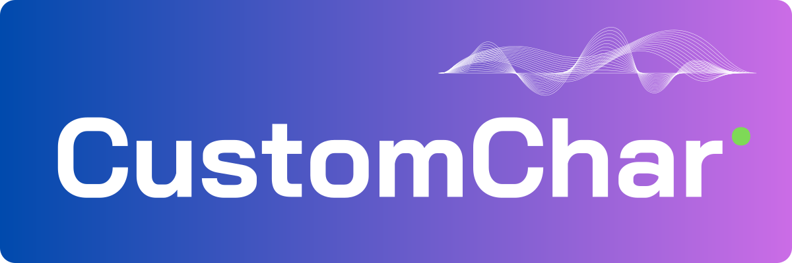
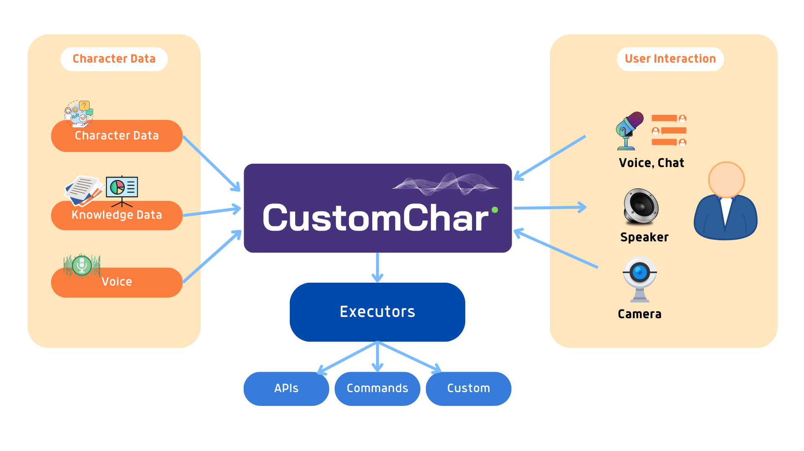

Your customized AI characters - personal assistants on any hardware! This project aims to be a framework to enable the creation of AI characters that can be used in games, simulations, virtual assistants, and other applications without depending on specific platforms, cloud services, or specialized hardware.

Some of the applications you can build with CustomChar:
- Game characters that can talk to you and interact with you.
- Your customized virtual assistant. Think about a JARVIS version on your computer.
- Online education experience with virtual friends/teachers.
- Cloud services that enable users to create their own virtual characters.
Our very early experiment with CustomChar
https://github.com/vietanhdev/CustomChar/assets/18329471/4674efe7-6d7f-4e5e-9b28-ad2c92027fa9
Note: This project is still in the early stage of development. We are working hard to make it available as soon as possible. Star this project 🌟🌟🌟 to follow our progress and encourage us to make it happen.
1. Architecture

2. Updates
- 🔥 2023-07-29: Added a plugin executor to open apps.
- 🔥 2023-07-25: Added UI with Dear ImGui.
- 🔥 2023-07-23: Documentation website is online at https://docs.customchar.com.
- 🔥 2023-07-22: Voice chat with your Llama-V2 model. TTS is supported on MacOS only.
3. Features
- [ ] Build AI characters from the knowledge database 💬💬💬 :
- [x] LLamaCpp for LLM. Chat with Llama-V2 on all platforms.
- [ ] Knowledge indexing and searching.
- [x] Talk to your character 🎤🎤🎤 :
- [x] STT with whisper.cpp. Now supports speech recognition on all platforms.
- [ ] Hear from your character 🔊🔊🔊 :
- [x] TTS with "say" on MacOS. Note: "say" is not available on other platforms (Windows, Linux)
- [ ] TTS with bark.cpp. Expected to be available on all platforms.
- [x] Plugin executor:
- [x] Open apps (WIP - Need improvement for Windows and Linux).
- [ ] Search on Google.
- [ ] Search on Youtube.
- [ ] Perception engine to see the world through the camera 📷📷📷.
- [x] Add a GUI for the character interaction.
- [ ] Add a GUI for the character creation.
- [ ] Create virtual characters that can be used in games, simulations, and other applications.
- [ ] Elon Musk
- [ ] Iron Man
- [ ] Batman
- [ ] Superman
- [ ] Add bindings to other languages:
- [ ] Python
- [ ] C# (Unity)
- [ ] Javascript (On-browser)
4. Build
Install dependencies:
On macOS: Using Homebrew
brew install sdl2 glew glfw3
brew install opencv
On Ubuntu:
sudo apt-get install libsdl2-dev libglew-dev libglfw3-dev
sudo apt-get install libopencv-dev
On Windows: Using vcpkg and Git Bash:
vcpkg install sdl2:x64-windows glew:x64-windows glfw3:x64-windows
vcpkg install opencv[contrib,nonfree,ffmpeg,ipp]:x64-windows --recurse
Build the CustomChar executable:
mkdir build
cd build
cmake ..
make
5. Usage
Download the models before running the program:
bash scripts/download-models.sh
Run the program:
6. Build documentation
- Step 1: Install doxygen first.
- Step 2: Build the documentation:
7. Contribution
We welcome all contributions to this project.
- For coding style, please follow the style of the existing code. We basically follow the Google C++ Style Guide.
- Install clang-format for auto formatting the code.
- Install pre-commit for auto formatting hook or manually run the script
scripts/format-code.sh to format the code.
pre-commit install # Install pre-commit hook
bash scripts/format-code.sh # Format code (C++ styling)
8. Star history

9. References